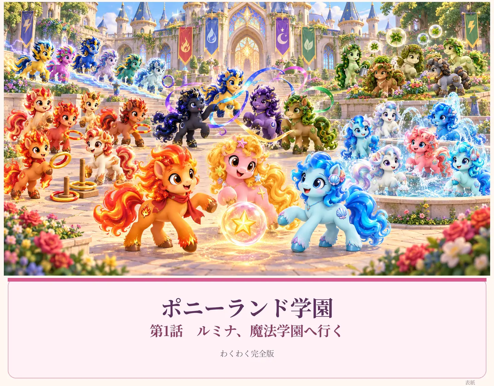

♪ ナレーター

だい1わ
ルミナ、
魔法学園へ行く
絵本の読み聞かせ
絵と文章を見ながら、端末の日本語音声で物語を読み上げます。途中からでも、好きな場面からでも楽しめます。
音声が聞こえない場合は、端末の音量をご確認ください。専用キャラクター音声は次の制作段階で追加できます。
1 / 333%
読み聞かせの設定
この試作版では、端末に入っている日本語音声を使います。ルミナ・フレア・ミュウミュウは、声の高さと速さを変えて読み分けます。